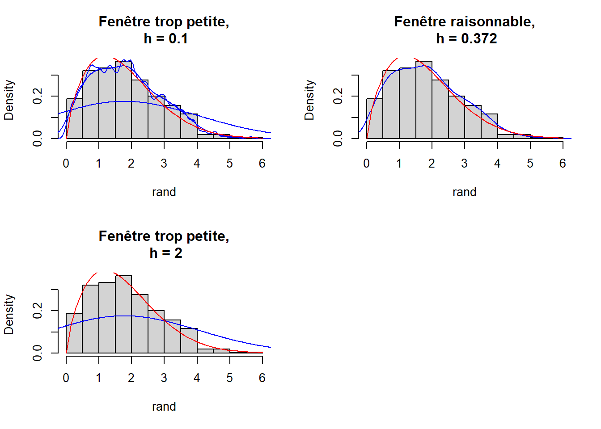

Chapter 4 Méthodes adaptatives :
On a introduit précédemment la notion de l’estimation de la densité qui dépend d’un paramètre de lissage h. Soit \((\hat{f_h})_{h\in \mathcal H}\) une famille des estimateurs de la vrai fonction densité \(f\) . La question qui se pose est donc la suivante : comment peut on construire un estimateur à risque optimal à partir de cette famille (en prenant en considération les observations) ? Dans cette partie et afin de repondre a la question qu’on a poser on va discuter au premier temps du choix du noyau. Ensuite, on va introduire deux méthodes pour le choix du paramètre de lissage h .
4.1 Choix du noyau
4.2 Choix de la fenêtre
L’estimation de densité nécessite le choix de la fentêtre qu’on note h.En statistique non-paramétrique, ils éxistent plusieurs méthodes et critéres de qualité pour le choix de la fêntere.
On présente dans la suite deux méthodes: Méthode de validation croisée. Méthode de Goldenshluger-Lepski.
4.2.1 Choix de la fenêtre \(h\) par validation croisée
Le choix de la fenêtre dans la section précédnte est criticable: comme on l’a mentionné, il dépend de la régularité la fonction \(f\) qui est inconnue dans notre cas. On peut donc essayer d’estimer cette fenêtre idéale par un estimateur \(\hat{h}\). De façon à souligner la dépendance à la fonction, on va noter \(\hat{f}_{n,h}\) l’estimateur associé à un choix de fenêtre \(h\). L’estimateur final sera \(\hat{f}_{n,\hat{h}}\), une fois le choix de \(\hat{h}\) fait.*on fait un choix sur h ?** On cherche à minimiser en \(h\) le risque quadratique pour la distance \(L_2\) :
\[ \begin{aligned} R(\hat {f}_{n,h})&=\mathbb{E}[\begin{Vmatrix}\hat {f}_{n,h}-f\end{Vmatrix}_2^2]\\ &= \mathbb{E}[\begin{Vmatrix}\hat {f}_{n,h}\end{Vmatrix}_2^2] -2~\mathbb{E}[\int \hat {f}_{n,h}(x)f(x)dx] +\begin{Vmatrix}f\end{Vmatrix}_2^2 \end{aligned} \]
Or la fonction \(f\) étant inconnue, ce risque n’est pas calculable à partir des données. On cherche donc à estimer ce risque en utilisant uniquement les données. Remarquons tout de suite que minimiser en \(h\) la quantité \(R(\hat {f}_{n,h}, f)\) est équivalent à minimiser en \(h\) la quantité \(R(\hat {f}_{n,h}, f)-\begin{Vmatrix}f\end{Vmatrix}_2^2\). On va en fait remplacer la minimisation de la quantité inconnue \(R(\hat {f}_{n,h}, f)-\begin{Vmatrix}f\end{Vmatrix}_2^2\) par la minimisation d’un estimateur \(\hat {R}(h)\) de cette quantité. Plus précisément on va chercher un estimateur sans biais de cette expression:
\[ \mathbb{E}[\begin{Vmatrix}\hat {f}_{n,h}\end{Vmatrix}_2^2] -2~\mathbb{E}[\int \hat {f}_{n,h}(x)f(x)dx] \]
Le premier terme admet \(\begin{Vmatrix}\hat {f}_{n,h}\end{Vmatrix}_2^2\) comme estimateur trivial (d’après la propriété des estimateurs sans biais : \(\mathbb{E}[\hat {\beta}]=\beta\)). Il reste à trouver un estimateur sans biais du second terme. Pour cela, nous admettons par construction l’estimateur sans biais \(\hat {G}\) défini en tout points sauf en \(X_i\) (c’est le principe du Leave-one-out):
\[ \hat{G} = \frac{1}{n}\sum_{i=1}^n\hat {f}_{n,h}^{(-i)}(X_i) \] avec :
\[ \hat {f}_{n,h}^{(-i)}(x)= \frac{1}{n-1}\frac{1}{h}\sum_{j=1,j\ne i}^nK(\frac{x-X_j}{h}) \]
Montrons que \(\mathbb{E}(\hat{G})=\mathbb{E}[\int \hat{f}_{n,h}(x)f(x)dx]\). Comme les \(X_i\) sont i.i.d., d’une part nous avons : \[ \begin{aligned} \mathbb{E}[\int \hat {f}_{n,h}(x)f(x)dx]&= \mathbb{E}[\int \frac {1}{nh}\sum_{i=1}^nK(\frac {x-X_i}{h})f(x)dx]\\ &=\frac{1}{h}\mathbb{E}[\int K(\frac {x-x_1}{h})f(x)dx] \\ &=\frac{1}{h}\int f(x)\int K(\frac {x-X_1}{h})f(x_1)dx_1dx \end{aligned} \]
D’autre part, nous avons : \[ \begin{aligned} \mathbb{E}[\hat{G}]&=\mathbb{E}[\frac{1}{n}\sum_{i=1}^n\hat{f}_{n,h}^{(-i)}(X_i)]\\ &=\mathbb{E}[\hat{f}_{n,h}^{(-1)}(X_1)]\\ &=\mathbb{E}[\frac{1}{n(n-1)h}\sum_{j\ne 1}K(\frac{X_j-X_1}{h})]\\ &=\mathbb{E}[\frac{1}{h}K(\frac{X-X_1}{h})]\\ &=\frac{1}{h}\int f(x)\int K(\frac{x-x_1}{h})f(x_1)dx_1dx\\ &=\mathbb{E}[\int \hat{f}_{n,h}(x)f(x)dx] \end{aligned} \]
Donc, \(\hat{G}\) est un estimateur sans biais de \(\int\hat{f}_{n,h}(x)f(x)dx\). Finalement, l’estimateur sans biais de \(R(\hat{f}_{n,h}, f)-\begin{Vmatrix}{f}\end{Vmatrix}_2^2\) est donné par:
\[ \hat{R}(h)=\begin{Vmatrix}\hat{f}_{n,h}\end{Vmatrix}_2^2-\frac{2}{n(n-1)}\sum_{i=1}\sum_{j=1,j\ne i}\frac{1}{h}K(\frac{X_i-X_j}{h}) \]
On définit alors
\[ \hat{h} = arg\ \underset{h\in H}{min}\hat{R}(h) \]
Si ce minimum est atteint. On cherche une fenêtre parmi une grille finie de valeurs, grille qu’on a notée \(H\) dans la formule ci-dessus.
L’estimateur \(\hat{f}_{n,\hat{h}}\) a de bonnes propriétés pratiques et de consistence.
La validation croisée est une méthode très générale mais nous l’utilisons ici pour le choix la fenêtre \(h\) optimale.
4.2.2 Méthode de Goldenshluger-Lepski
La méthode de Goldenshluger-Lepski donne principalement des critères pour le choix entre estimateurs à noyau \((\hat{f_h})_{h\in \mathcal H}\) avec différentes fenêtres qu’on fixe en prennant n considération l’échantillon des observations. Cette méthode propose de choisir le \(\hat h\) qui minimise l’expression suivante: \[ B(h)+V(h) \] Avec :
\[ B(h)=sup_{h' \in \mathcal H}{[\parallel\hat f_{h'} - \hat f _h \parallel-V(h')]} \] Et \[ V(h)=a \frac{\parallel K_{h'}\parallel^2}{n} \] Tel que \(K\) est le noyau, \(a\) un paramètre et \(V(h)\) est le terme de pénalisation.
On a donc le \(\hat h\) est égale à: \[ \hat h = arg min_{h \in \mathcal H}(B(h)+V(h)) \]
On s’intéresse dans cette méthode à déterminer le terme de pénalisation minimal \(V(h)\) tel que si on le dépasse on n’obtient plus l’équilibre biais-variance.
Dans ce cas, la valeur de \(\hat h\) est d’ordre \(\frac{1}{n}\),
Le choix optimal de la fenêtre \(h\) suivant cette méthode dans ce cas est \(n^{-\frac{1}{2 \alpha +1}}\)
4.1.1 Comment choisir les paramètres de la méthode ?
Dans la méthode d’estimation à noyau le choix du noyau n’est pas le plus important, le vrai enjeu de cette méthode est le choix de la fenêtre \(h\) (bandwidth). En effet, la fenêtre détermine l’influence des données dans l’estimation. Si \(h\) est petit, l’effet local est important donc on aura beaucoup de bruit. Si \(h\) est grand on aura une estimation plus douce, plus lisse.
Nous pouvons constater l’influence du paramètre \(h\) sur l’exemple suivant : Nous avons simulé 500 variables suivant une loi de Weibull de paramètres (\(\alpha = 1.7\), \(\lambda=2\)) représentées dans l’histogramme. La courbe en rouge est la vraie fonction de densité et la bleue est l’estimation avec la méthode des noyaux sur les variables simulées.
 La fenêtre \(h\) du second graphique est calculé automatiquement par la fonction
densityde R.